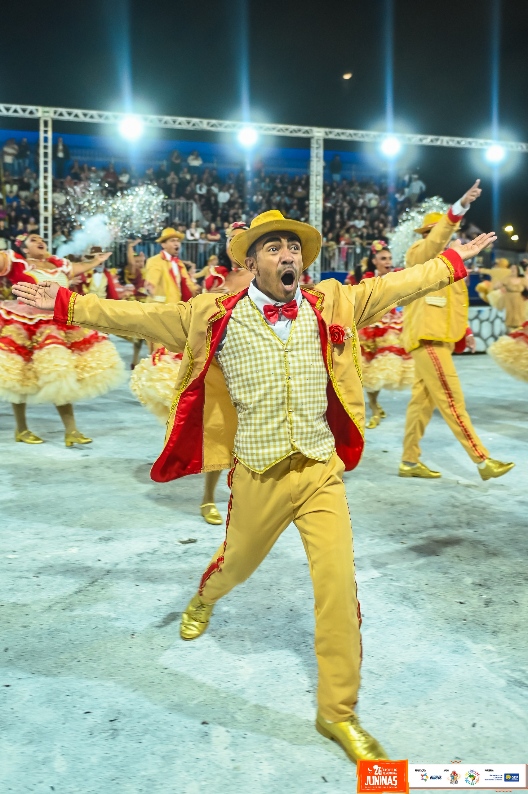

Formiga da Roça
A Quadrilha Formiga da Roça é de São Sebastião/DF e completa 30 anos de história em 2026.
SOBRE A QUADRILHA
A Quadrilha Formiga da Roça é de São Sebastião/DF e completa 30 anos de história em 2026. Inspirada no nome das formigas da roça, símbolo de força, trabalho, garra e união, a quadrilha se tornou referência nas festas juninas do Distrito Federal. Cada brincante é parte de uma grande equipe que preserva a tipicidade do movimento, levando emoção, alegria e brasilidade a cada apresentação.
Tema 2025: "Homenagem a Raimundo Jacó".
Com 34 casais em cena, a Formiga da Roça combina coreografias típicas, figurinos detalhados e cenários que remetem ao sertão e à vida rural. Representando São Sebastião no circuito do DF e Entorno, o grupo mantém viva a memória de heróis sertanejos, tradições e rituais como a Missa do Vaqueiro, sempre emocionando o público e fortalecendo os laços comunitários.
Tema 2025: "Homenagem a Raimundo Jacó".
Com 34 casais em cena, a Formiga da Roça combina coreografias tÃpicas, figurinos detalhados e cenários que remetem ao sertão e à vida rural. Representando São Sebastião no circuito do DF e Entorno, o grupo mantém viva a memória de heróis sertanejos, tradições e rituais como a Missa do Vaqueiro, sempre emocionando o público e fortalecendo os laços comunitários.
Histórico no Circuito
| Ano | Grupo | PosiÁ„o | PontuaÁ„o total |
|---|---|---|---|
| 2025 | Especial | 2∫ | 629.2 |